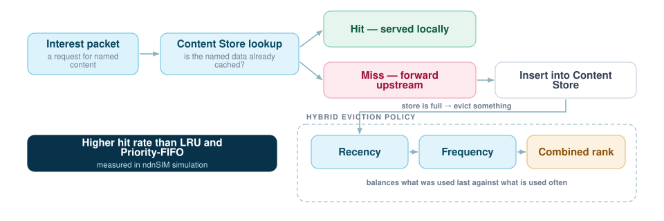

A Hybrid Eviction Policy for Named Data Networking
In content-centric networking, every node caches named data — and every node has finite memory. Which content you throw away when the store fills up therefore decides network throughput. This work proposes an eviction policy that weighs recency against frequency instead of committing to either.

Why caching is the whole problem
Named Data Networking replaces "where is this host" with "what is this content", and that makes in-network caching a first-class part of the architecture rather than an optimisation layered on top. Because NDN nodes have finite content stores, eviction policy is one of the main levers on network throughput.
The hybrid policy
Classic policies each commit to one signal. LRU trusts recency: whatever was touched longest ago goes first. Priority FIFO trusts insertion order and a static priority. Both are cheap and both discard information the other one keeps.
The proposed hybrid policy optimises the choice of eviction victim by balancing frequency and recency together, so content that is requested steadily is not evicted just because it happened to go quiet, and content touched once in a burst does not hold a slot indefinitely.
Simulation outcome
In simulation the hybrid approach showed superior hit rates compared with standard industrial baselines — LRU and priority FIFO.
Method
Network traffic and cache behaviour were simulated in ndnSIM. Beyond the policy itself, the work contributed to understanding how data naming conventions influence caching efficiency in next-generation internet architectures — because in NDN the name is what the cache is keyed on, the naming scheme and the eviction policy are not independent choices.